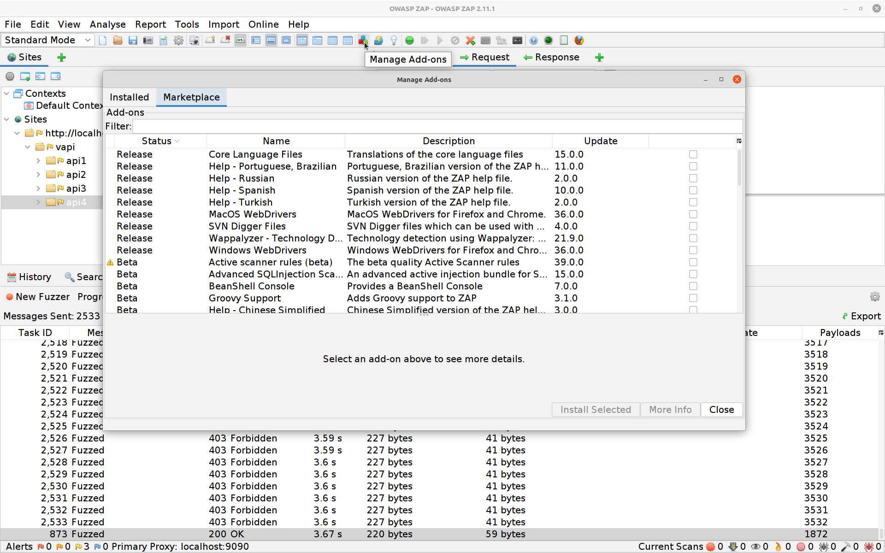
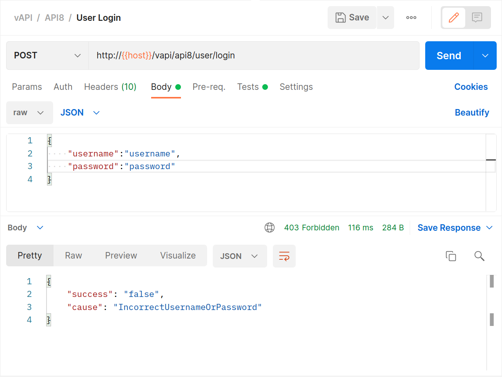

OWASP API Top 10 CTF Walk-through
Grant Ongers
So you wanna hack an API? Let's analyse an API using the OWASP API Security Top 10 to guide our effort and hack it, together. Maybe we'll capture some flags while we're at it?

I’ve been promising this walk-through for a while now (ever since first updating this material to use the awesome vAPI CTF 1.1) and now I’ve finally gotten around to it.
Getting started
To get started with you’ll need to have access to the following tools:
- Docker - please ensure that you can use
docker-compose; - git - please make sure you can
git clonepublic repositories; - Postman; and of course
- ZAP.
Then there are the bonus tools, and I say bonus because I was unable to make either work on both my new Mac (new Mac silicone FTW), or my Ubuntu machine (I don’t use Wayland on my XPS). You only need one of these tools, so pick the one suitable for your OS.
- Waydroid; or
- Bluestacks
You’ll also need to grab that deliberately vulnerable API:
We are going to be leveraging Tushar (roottusk) Kulkarni’s well put together vAPI which is a Capture the Flag (CTF) style exercise covering off the OWASP API Top 10. The project is self-contained, leveraging Docker to provide the full requirements and can be grabbed from:
- his GitHub repository
git clone https://github.com/roottusk/vapi.git; or - the Secure Delivery one
git clone https://github.com/secure-delivery/vapi.git
Once your clone has completed you simply need to:
cd vapi
docker-compose up -d
You can test that the API has successfully launched by hitting http://localhost/vapi/ to see that a Laravel server is up and running and listening there.
Then we want to launch our testing applications, Postman and ZAP.
In Postman, we want to import the files in the vapi/postman/ folder which will provide you with both an Environment and the Collection of API end-points to get started with.
When launching ZAP we want to make sure that it’s configured to accept external requests. The easiest way is to launch ZAP with the following switches zap.sh -config api.addrs.addr.name=.* -config api.addrs.addr.regex=true
We then need to ensure that traffic is properly proxied to our API through ZAP when we use Postman.
In Postman you need to check and change a couple of things:
-
Start by ensuring that you configure a proxy server for Postman to use:
-
You should also make sure that on your Environments tab the vAPI_ENV for host is set correctly:

-
You need to also ensure that you have enabled the Environment file for Postman
In ZAP now you check to ensure a couple of things:
-
Firstly that it’s running as a proxy (ensure that the port number here matches your settings in Postman earlier)
-
That your start-up config came through correctly.
-
While we are here let’s make ZAP super aggressive when fuzzing. You may want to tweak this if your machine appears to struggle but the higher your number of concurrent scans and the lower your delay is the faster you’ll fuzz.
-
And then turn off the ZAP HUD. Trust me on this one, if you find ZAP not properly proxying your requests (turning POST requests into GET for example) this is going to be why - there is an open issue describing the frustrations you’ll feel here.
OWASP API Top 10
Whew, still here? Excellent. Now let’s get to hacking. Starting with…
#1 Broken Object Level Authorization
Authorization is about access control, or what actions are permitted against which objects. The short version of this vulnerability is that a particular object (chunk of data) is not protected the way it should be. There are many reasons this can happen and why it’s more likely potentially to happen in APIs rather than standard web applications… all reasons that we go into when running through these as an exercise, but we’re just here for the hacks right now.
The exercise is a simple one:
-
Use the
POSTrequest to create a new user (populating it with data first) -
Use the
GETrequest to get that user’s details. Notice that the request uses a variable{{api1_id}}for the endpoint whose details we are collecting. That variable was populated with a response value from thePOSTabove… -
What happens if we manually manipulate that value? In ZAP we can simply grab the
GETrequest from earlier and use the Manual Request Editor to modify the value (to 1 in this example). And as you can see we get our first flag! -
I use ZAP for this and not Postman because even though it’s just as easy to modify that endpoint in Postman I want to also show you that authentication IS required and that’s easy to quickly do in ZAP.
-
The
PUTrequest (for updating the account details) can also be used to show that there is some auth happening, and not all actions are affected by the issue.
#2 Broken User Authentication
Where #1 was all about access control, authentication (or AuthC as it’s called), is all about identity. While this is a problem in most disciplines there are a lot of reasons that it ranks so highly in the API world, starting with the fact that most identity measures involve a secret that has a tendency to end up in your repository…
But let’s get into the exercise:
-
Use the
POSTrequest with some random details filled in to try to log into the system. -
The eagle-eyed might have noticed a folder called
vapi/Resources/API2_CredentialStuffingwhen loading thevapi/postman/files. If you take a closer look at that folder you’ll discover that those secrets are indeed out there. -
Switch to ZAP and take a look at the request you just sent. We are going to use ZAP’s Fuzzer now along with that credentials list to try see if any users in that breach are users of this system, and (if they are), to see whether they’ve reused their passwords…
-
Select the POST request, high-light the login details, right-click and select Fuzz
-
Click on Payloads, then Add and paste in the quick and dirty modified version of the
creds.csvfile that I’ve included here (using some rough concatenation to make ZAP’s job easier) -
Hit Add again then OK and finally Start Fuzzer. The Fuzzer will run for a while (depending on how many resources you’ve got available to the API and to ZAP) and then boom:
-
All that’s left to do is to use one of those valid Authorization-Tokens on the
GETrequest to find your second flag
#3 Excessive Data Exposure
Again, this is an issue in many technologies but because of what APIs are intended for there is a particular concern around this here. It starts with the fact that APIs are usually fronted by an application for users, and that application generally does something to present the data back to the user. It also has to do with the fact that APIs try to be self-describing and so mau provide mote meta-data than they perhaps should.
Exercise 3 is the one where you’ll need to break out the Android virtualisation platform (should you have one working). Don’t worry too much if you don’t, I have screenshots, and you’ll be able to follow along just fine.
-
If you’re able to run
vapi/Resources/API3_APK/TheCommentApp.apkthen do that, pointing the app at your instance of vAPI (through ZAP as your proxy), creating an account and then logging in and posting a comment.
-
Alternatively you can use Postman to do the same things

BANG! Flag number three in the bag.
We really need to have a word with those developers. Not only are they providing data back to the API that the GUI never users (or needs) they are also collecting information (probably for marketing) that we don’t need and should never have!
#4 Lack of Resources & Rate Limiting
This is an interesting one, mostly because APIs are designed for computers and because computers work faster, and so request and process quicker than humans do.
We’ve already done an exercise that shows this (remember the credential stuffing?) but this is another good opportunity to try out some more ZAP fuzzing:
-
Use Postman to initiate a mobile login, putting the API into a state that expects a PIN to be entered next.
-
Attempt a login with any random PIN.
-
Switch to ZAP and select the OTP POST request, high-light the PIN, right-click and select Fuzz.
-
Click on Payloads, then Add and change the dropdown to Numberz. Set the starting number to 1000 and the ending one to 9999.
-
Hit Add again then OK and finally Start Fuzzer. The Fuzzer will run for a little longer this time until eventually it spits out the right PIN. You can hit the stop button to the right of the fuzzer’s name to stop it once it’s done so.
-
All that’s left to do is to log in with the correct PIN, then hit the
GETrequest for the details and your fourth flag
#5 Broken Function Level Authorization
We talked about Broken Object Level Authorization in #1, and this is much the same type of problem but then not on the data level but rather on the action level. The easiest way to think about this is some level of privileged access accidentally being available to ordinary users.
The exercise gives us a chance to try some ZAP addons:
-
Addons for ZAP can be installed like this straight from within ZAP itself. For this exercise you’ll want to install FuzzDB Files. 
-
In Postman you’ll want to fire off the create user
POSTrequest. -
We’ll follow up with the
GETuser request -
Back in ZAP we’re going to attack that
GETrequest and see if there are any more privileged endpoints we can fuzz. Select theGETrequest, high-light the endpoint, right-click and select Fuzz -
Click on Payloads, then Add. This time we are going to change the selection to File Fuzzers, and we’re going to select the fuzzdb -> discovery -> common-methods
-
Hit Add again then OK and finally Start Fuzzer. The Fuzzer will run a bit before hitting
usersand our fifth flag.
#6 Mass Assignment
Mass assignment requires a little explanation for most folks who’ve never run across it before - so pretty much anyone who isn’t an object orientated programmer.
Essentially this vulnerability relies on the fact that classes of objects may have special or restricted attributes on them that should only be modified through restricted methods but the implementation on a less restricted method might allow it to update those - even though the API might not advertise the fact.
Let’s take a look in practice:
-
In Postman use the
POSTAPI to create a user. -
Now
GETthat user’s details and see that theGETresponse contains more data in it than thePOSTdid. -
Can we use that? Let’s use Postman to modify our
POSTfor user creation like this. -
And then
GETthat same user back again.
#7 Security Misconfiguration
This is a big one, and a bit of a catch-all if I’m being honest. There are many aspects of configuration that can end up leading to less secure setups. Fortunately ZAP is brilliant at helping us to identify those.
The exercise we’re going to run here is simply hitting the endpoints provided with Postman initially.
-
Create a user with the
POSTmethod. -
Log the user in with the provided
GETrequest. -
Leverage the
GETkey request. -
Switch over to ZAP and that a look at the Alerts tab.
So there’s a CORS vulnerability we might be able to exploit, possibly with some JAVAScript and a page hosted elsewhere… and the first time I did this CTF I actually did just that. The problem is that MOST browsers are very careful about CORS now… API clients need not be so well-behaved.
- Simply modifying the
GETkey request to include an Origin header from somewhere else… our seventh flag!
#8 Injection
Just like web applications, APIs can experience injection attacks in their various forms.
This exercise is a basic SQL Injection attack and a great opportunity to flex our ZAP skills again.
-
Using Postman and the
POSTendpoint attempt to log in.  -
Switch to ZAP and select the login POST request, high-light the password, right-click and select Fuzz.
-
Hit the Edit button and blank out the username value, hit Save afterwards.
-
Click on Payloads, then Add and change the dropdown to File Fuzzers. Select fuzzdb -> attack -> sql-injection -> exploit -> mysql-injection-login-bypass.txt.
-
Hit Add again then OK and finally Start Fuzzer. The Fuzzer will run for a little longer this time until eventually it spits out the right PIN. You can hit the stop button to the right of the fuzzer’s name to stop it once it’s done so.
-
All that’s left to do is to re-run the
GETSecret with the authkey acquired above for flag number 8!
If you are having trouble with your FuzzDB files, you may need to ensure that there is a space after the dashes in your SQLi ' or 1=1-- (sometimes it does seem to get swallowed.)
#9 Improper Assets Management
This is another brilliant catch-all issue, covering a multitude of API security concerns from incomplete separation of environments through to not properly maintaining legacy endpoints.
This exercise starts us off with a V2 API, so it’s fairly clear what we’re aiming for.
-
Use the
POSTrequest to attempt a login. -
Hrmmm 200 OK? but I’ll bet that
****is not actually the PIN. -
In ZAP let’s break out our Numberz fuzzer again. Select the PIN POST request, high-light the PIN, right-click and select Fuzz.
-
Click on Payloads, then Add and change the dropdown to Numberz. Set the starting number to 1000 and the ending one to 9999.
-
Hit Add again then OK and finally Start Fuzzer. The Fuzzer will run for six attempts and then the API will start returning 500 errors.
-
Damn, that means rate limiting is in place! So how do we get around that? Let’s start by seeing if there is still a V1 API endpoint around.
-
Aha! Now let’s try that fuzzer again on the newly uncovered endpoint.
-
Nothing but 200 OK! Excellent no rate-limiting in sight. Finding the correct PIN is a little more tricky however as they are all 200 OK now… if you sort by the Size Resp. Body column you’ll see one actually returns more than just a
1. -
And the response gives you your ninth flag!
#10 Insufficient Logging & Monitoring
Without the right (sufficient and concise enough) logging there is no way to monitor, so these two are one issue. There is actually an OWASP project dedicated to benchmarking log files (OWASP Secure Logging Benchmark) because of how important this is, especially for APIs.
The exercise is a very simple one as there simply are no useful logs being kept:
- In Postman simply
GETthe flag. It’s been a lot of work to get here, this last one is free!
Wrapping it up
If you enjoyed this walk-through and would like to know more about how we use tools like this CTF to teach development teams how to properly secure and automatically test their APIs please do reach out to us.
Get in touch
We'd love to hear from you. Let's start your journey to world-class secure software product delivery today!
- Address
- Secure Delivery
Office 7, 35/37 Ludgate Hill
London
EC4M 7JN - Telephone
- +44 (0) 207 459 443